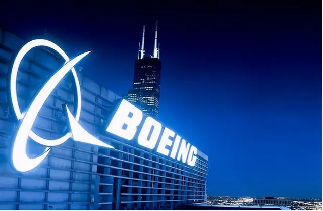
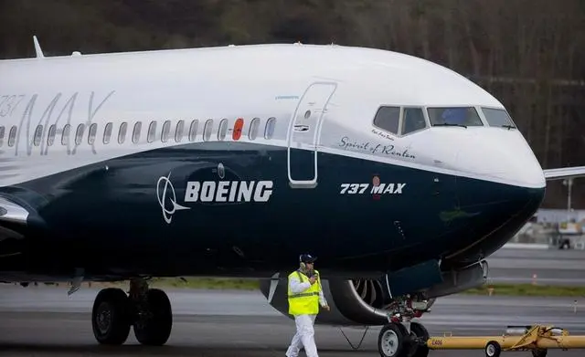
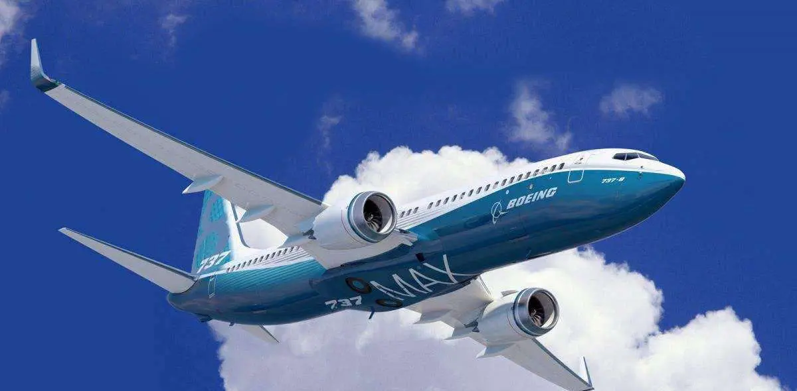
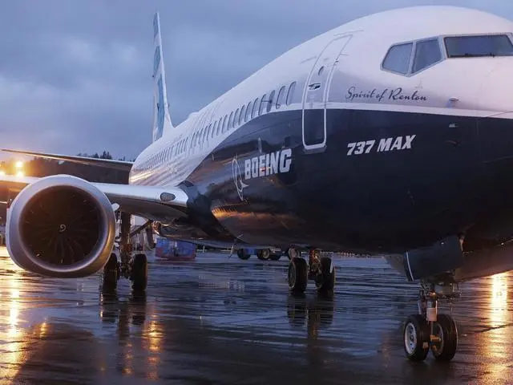

近日，据媒体报道，在美国多次触碰底线后，波音公司上榜制裁名单，制裁启动后波音损失200亿美元，尽管波音总裁两次赴华求情，但依旧没人理，对此有网友表示，美国会服软吗?美国近期宣布波音737MAX已经达到安全标准，并质疑有关国家为何还不复飞，对方则就此表示，基于对这款机型安全的质疑，以及对乘客生命安全负责的态度，暂时没有为波音737MAX设定时间表，要知道2018年印尼一架该型号客机在起飞大约10分钟后坠毁，机上近200人全部遇难，2019年埃塞俄比亚也有一架同款客机在其国内坠毁，机上100多名乘客和机组人员全部遇难，事后查明肇事原因与波音的研发过程中产生的失误脱不了干系，因此各国相继暂停了波音737MAX的飞行。

那么波音737MAX存在的安全隐患是否被彻底解决了呢?此前坠毁是由于飞行控制系统失灵造成的，这套系统是为了增强飞机的机动特性，设计初衷是，如果传感器检测到飞机失速，在没有飞行员输入信号的情况下，该系统将强制向下按压飞机的机头，而波音公司未能正确告知飞行员们这一系统的存在，也有观点表示，波音737MAX的发动机被改动过，使得发动机顶端高出机翼前缘，飞机在起降状态下很容易失速，这可能是导致飞机坠毁的原因。

根据民航复飞的原则，波音737MAX显然还不能让人并不放心，飞机上一切的更改必须获得适航批准，此外驾驶员必须得到充分有效的训练，更重要的是，此前事故必须明确坠毁原因，而且要提出相应的改进措施，对此外界表示，这些复飞原则恐怕波音公司难以完成，但民航对此严格要求的态度得到许多国家一致赞扬，毕竟民众的生命安全是复飞的前提。

可以说波音公司如今终于尝到了苦果，因为亚洲国家有将近100架737MAX投入运营，还有更多的后续订单，停飞该机型，波音公司面临的就是巨额的损失，而它所面临的困境不止这些，受疫情的影响，波音公司较去年同期亏损了上亿美元，为了适应疫情所带来的冲击，波音公司通过大批裁员的方式降低总体编制水平，对此蓬佩奥罕见低头服软，他呼吁各国为波音开放市场，试图挽回公众的信任。 总的来说，波音公司出现安全事故，也有相关部门对其监管妥协的原因，作为美国重要的支柱企业，波音公司不仅是为起创造巨大经济利益，更重要的是对所有乘客的生命安全负责，如果再不拿出切实的解决措施，恐怕短时间内很难赢得别国的信任。